Support for high DPI
The entire UI is scaled on high-DPI settings. Here is the complete list of UI elements that is scaled with the DPI:
- Check marks of check boxes and radio buttons (regular and as menu items), dimension and stroke width
- Arrow icons of combo boxes, scroll bars, split pane dividers, submenus, tabbed panes (dimension and stroke width)
- Title pane icons (for decorated mode) of frames, dialogs, internal frames and desktop icons + proper centering of the title pane buttons in Y direction
- Scroll bar width
- Slider icon and slider track size
- Tab close buttons (dimension and stroke width)
- Spinner button width
- Password field mark size (diameter and gap)
- Progress bar width / height
- Double arrow icon stroke size
- Minimum width and height of buttons with text
- Insets of combo boxes, text field and spinners
- Stroke width of focus ring
Here is a screenshot of an internal frame under 96 DPI (normal settings):
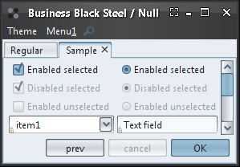Here is the same internal frame under 120 DPI (125% normal size). Note how all the UI elements (fonts, scroll icons, title pane icons, button size, check marks and radio buttons, combobox insets) scale:
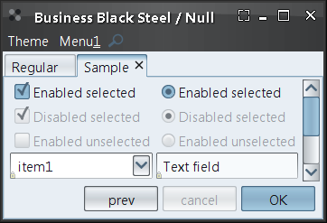Here is the same internal frame under 144 DPI (150% normal size):
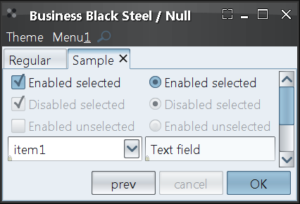New skins
Four new skins have been added.
The first is Business Blue Steel which follows the design of Blue Ice Synthetica theme:
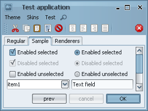 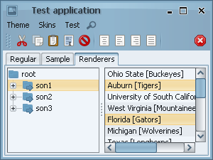The second is Business Black Steel which follows the design of Black Moon Synthetica theme:


The last two are based on the latest products from Microsoft and Apple camp. Microsoft's Expression Blend (free Beta download) and Apple's Aperture (free trial download) both sport the same dark-grayish UI that doesn't draw the attention away from the main work canvas (see sample Blend screenshot and sample Aperture screenshot).
{kind=link}
{kind=link}
The first is Raven Graphite:
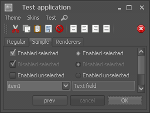 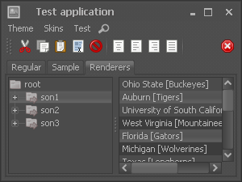and the second is Raven Graphite Glass (note that the button gradients and the header gradient are "glassier" and the foreground color is whiter):
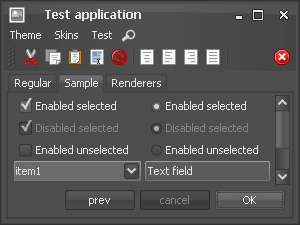 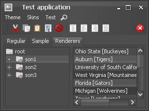Arc header painter
The org.jvnet.substance.title.SubstanceHeaderPainter
interface defines a title painter that can be used to paint the title pane, menu bar and (optionally)
tool bars. The core org.jvnet.substance.title.ArcHeaderPainter
implementation is used in the Graphite and Business skins to provide consistent painting of the
top portion of application frames. In the screenshots below, note that the
Business Black Steel skin
(on the left) uses an instance of
org.jvnet.substance.title.ArcHeaderPainter
that does not paint the toolbars (in this case, the toolbars have a drop shadow on top of
the toolbars):
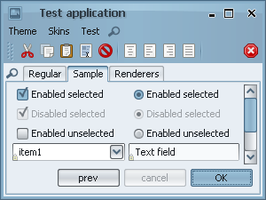
Streamlined slider painting
The sliders have more elegant appearance, taking much less screen space. Here's a screenshot of how sliders look like under the previous release:
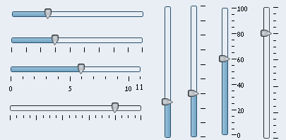Here's a screenshot of how sliders look like under this release. Note that the overall look is much more compact and elegant, including the track weight, thumb fill, tick spacing, tick color weight and label spacing. In addition, the thumb icon on sliders with no ticks and no labels is round:
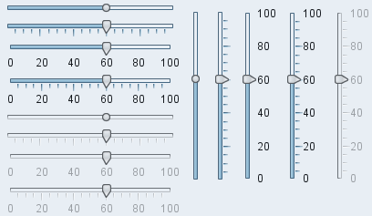
Animation on slider thumb proximity
Slider thumbs animate on mouse pointer proximity. Here are the new sliders under the Business Black Steel skin:
Here are the new sliders under the Raven Graphite skin:
Note how the slider thumb grows when the mouse is directly over it or in its vicinity and shrinks back. In addition, the focus ring properly fades in on focus acquiring and fades out on focus lost.
Flat title painter
The new org.jvnet.substance.title.FlatTitlePainter
provides an implementation of an unobtrusive title painter. Combined with a new
None watermark, it can be used to "blend"
the decorated title pane with the rest of the UI. The screenshots below show the same
application under Classic and
Flat title painters:
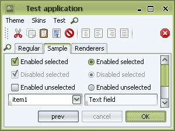 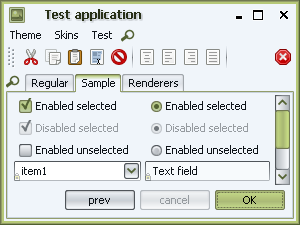
Themed button icons
New client property SubstanceLookAndFeel.USE_THEMED_DEFAULT_ICONS can be used to specify that the button icons of inactive (non-selected, non-pressed, non-rollover, non-armed) buttons should be painted in theme colors. This setting plays well with the new Graphite themes, especially when you have a lot of icon buttons on your toolbars and still don't want to distract the user from what he's doing.
A screenshot of an application not using this property:
The same application with this setting turned on:
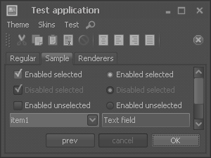The same application when the mouse is over the "Paste" toolbar button (third from the left):
New watermark
The new org.jvnet.substance.watermark.SubstanceNoneWatermark
provides a watermark implementation that paints nothing, completely respecting the original
background colors. Note that this is unlike the
org.jvnet.substance.watermark.SubstanceNullWatermark
that paints a translucent themed background fill on top of the original background colors,
which might look inconsistent with custom painting, especially on dark themes. The followings screenshots
show the same application under the new None
watermark on the left and under the old Null
watermark on the right. Note the differences in the background color and in the header colors:
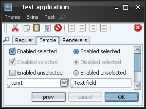 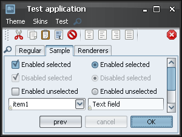
Focus looping animation
Substance respects the new FadeKind.FOCUS_LOOP
and animates the relevant focus kinds,
namely the default ALL_INNER,
TEXT and
UNDERLINE. The painting of the animated focus ring
respects the animation speed and the current DPI settings. Here is a clip of looping focus
painting:
Tree decorations animation
The new SubstanceLookAndFeel.TREE_DECORATIONS_ANIMATION_KIND
allows providing Vista-like
animations of the tree decorations. Disabled by default, it can be enabled by the
FadeConfigurationManager.allowFades()
API. Tree decorations being animated include collapse / expand icons and vertical horizontal lines.
Here is a clip of animated tree decorations: